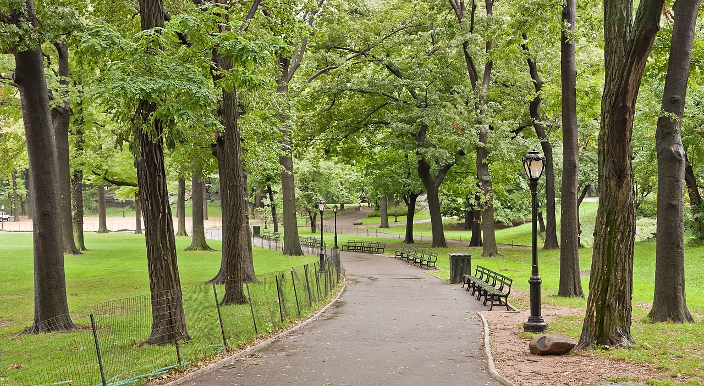

1. Central Park

Entrance at: W 59th st and 7th Ave, New York, NY
Having been here many times in my life, this is a great place to go and visit the only place in the city that has as trees in such density. It is a great place to see the surrounding city as well, since it is located near the center of Manhattan. As such, this would be a great first place to visit.